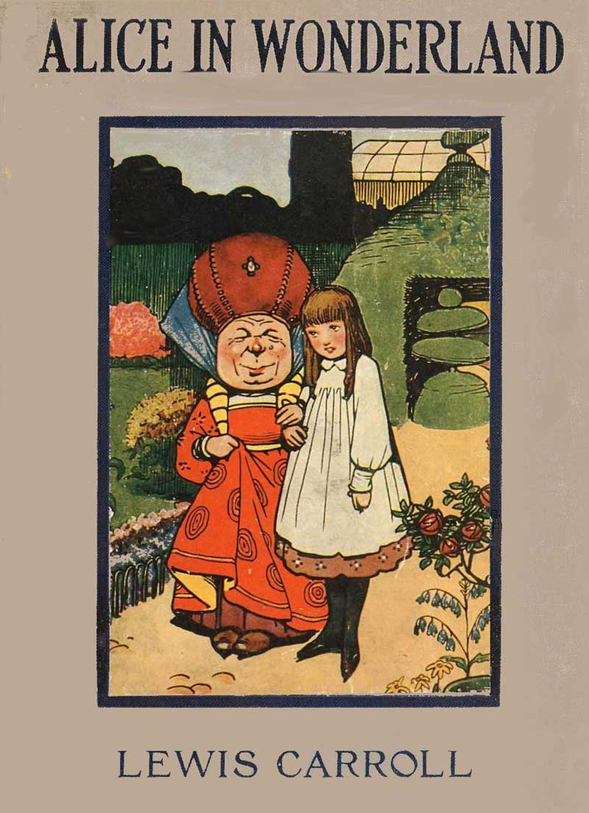

Alice’s Adventures in Wonderland
by Lewis Carroll
THE MILLENNIUM FULCRUM EDITION 3.0
Contents
CHAPTER I Down the Rabbit-Hole
CHAPTER II The Pool of Tears
CHAPTER III A Caucus-Race and a Long Tale
CHAPTER IV The Rabbit Sends in a Little Bill
CHAPTER V Advice from a Caterpillar
CHAPTER VI Pig and Pepper
CHAPTER VII A Mad Tea-Party
CHAPTER VIII The Queen’s Croquet-Ground
CHAPTER IX The Mock Turtle’s Story
CHAPTER X The Lobster Quadrille
CHAPTER XI Who Stole the Tarts?
CHAPTER XII Alice’s Evidence